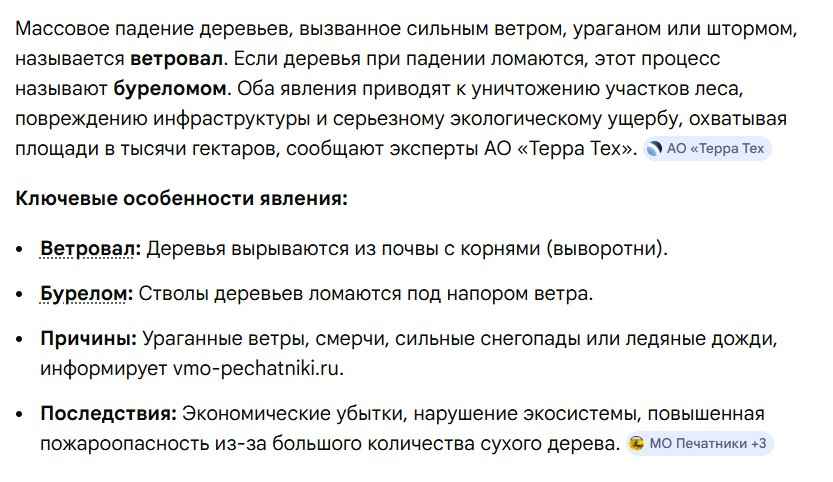
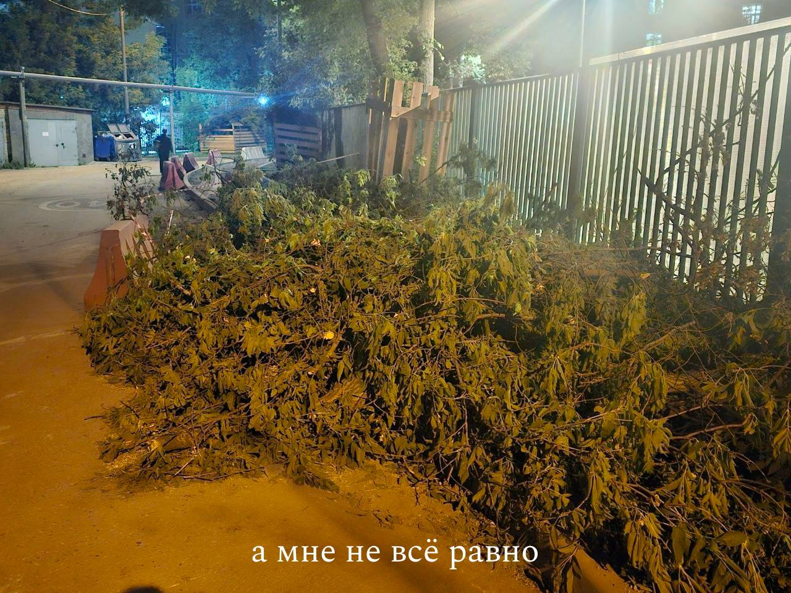

Бурелом — это деревья, повреждённые шквалистым ветром, бурей; деревья с обломанной верхней частью ствола или ветвями. Ежемесячно редакция посещает музыкальное мероприятие и проводит беседы с посетителями, чтобы выяснить, как они интерпретируют и воспринимают услышанное. Каждое мероприятие можно сравнить с деревом, противостоящим буре и ветру. Дерево ломается один раз, и звук его падения не повторяется, как и экспериментальное звуковое событие. Как зафиксировать эти звуки? Что остаётся? Остаётся бурелом. Зафиксированные интервью выполняют функцию органов чувств, которые уловили звук деревьев. Те, кто не присутствовал на мероприятии, не могут услышать первоначальный звук, но получают возможность увидеть услышанное другими с разных точек зрения.

Опыт важнее интерпретации.
Экспериментальная музыка как ситуация, а не объект.
Создаём печатное медиа про экспериментальную музыку.
Архив момента.


Звук падающего дерева в лесу
Если дерево упало в лесу, и рядом не было
уха, которое это услышало, был ли звук падающего дерева?
Философская наука уже сама по себе касается
загадки существования дерева, а также издаваемого
им при падении звука безотносительно к восприятию
человека. В том случае, если поблизости нет никого, кто мог бы
услышать дерево, увидеть его, почувствовать его запах или дотронуться,
что мы вообще можем сказать о его существовании? Естественно,
с точки зрения науки, дерево существует, а человек является лишь
воспринимающим аппаратом. Но некоторые философские учения утверждают,
что дерева не существует, так как никто о нём не знает.

«Дело о различиях между людьми —
в силу своих принадлежностей к разным языковым,
религиозным, территориальным культурам неизбежно будут воспринимать
данное им произведение по-разному. Будь то белая луна в синем
небе, или что-то иное. Люди действительно имеют тенденцию читать у вещах
именно то, что они и привыкли находить. Об этом может
свидетельствовать и популярная психология. Человек из одной
культуры увидит в луне именно символ плодородия и богатой удачи,
другой же может рассмотреть нечто, что может казаться ему скрытой угрозой,
или призывом к действию».
«Сама идея лежит в книге, без прямого влияния на неё
автора. И как эту книгу прочтут, о том она и будет повествовать».
— Джозеф Альтман, «Смысл как литературный приём»
